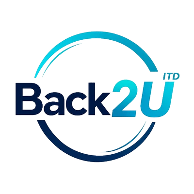
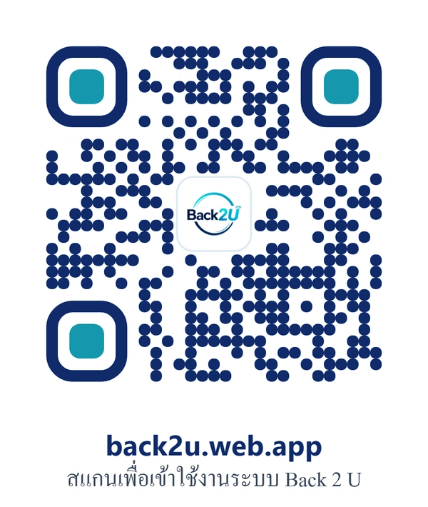

ชวนากร พวงสมบัติ
ตัวแทนกลุ่มผู้จัดทำ · สาขาเทคโนโลยีสารสนเทศและนวัตกรรมดิจิทัล
BACK 2 U
พรีเซนต์โครงงาน
BACK 2 U
Back
2
U
ขอบคุณครับ
Back
2
U
back2u.web.app

เริ่มนำเสนอ
Back 2 U · ศูนย์รวมการแจ้งติดตามของหายภายในห้องปฏิบัติการคอมพิวเตอร์
⏸ หยุด
0:00 / 0:00
เต็มจอ
ดาวน์โหลด MP4
หน้ารวม